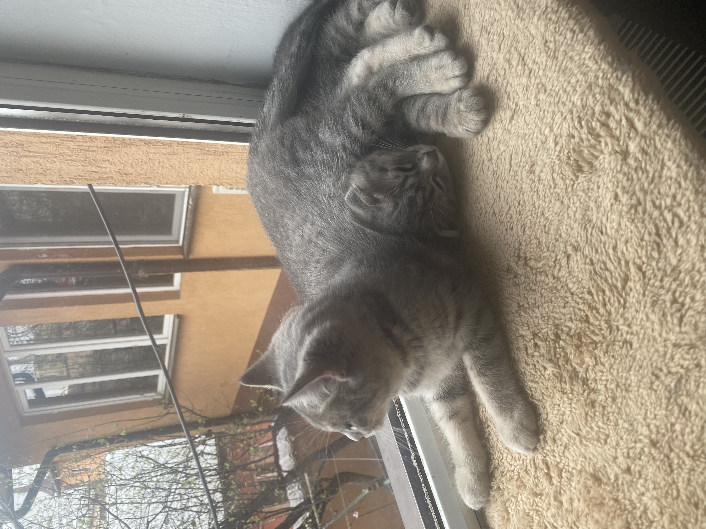
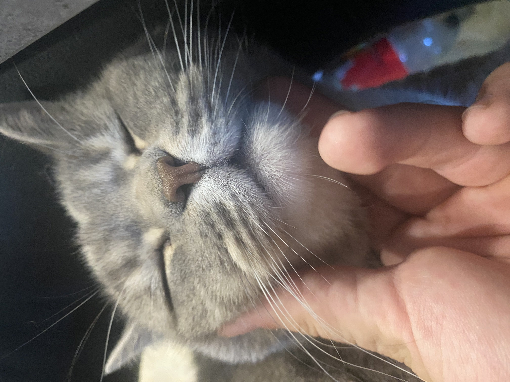
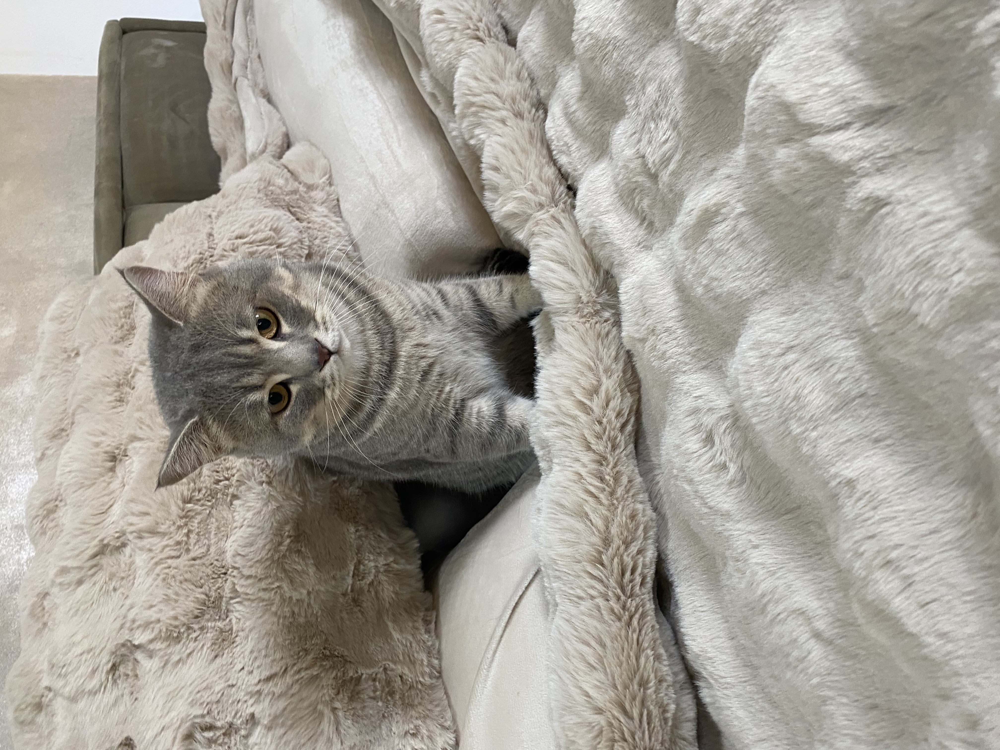

Povestea lui Fricosu

Inima Loială ❤️
Numele "Fricosu" i-a rămas de când era mic, pentru că era foarte precaut și se ascundea de oricine. Deși a rămas un motan timid cu străinii, și-a dezvăluit adevărata personalitate familiei sale.
Personalitate
Odată ce îți câștigă încrederea, Fricosu este incredibil de loial și iubitor. Nu este o pisică de ținut în brațe cu forța, dar va veni el la tine când își dorește. Are un suflet sensibil și preferă mediile liniștite, fără zgomote puternice sau agitație.
Este o prezență tăcută și calmă în casă, dar este mereu pe aproape, observând totul. Iubirea lui este subtilă, dar profundă.
Obiceiuri Amuzante
- Are un loc "secret" sub pat unde se retrage când vin musafiri.
- Doarme întotdeauna la picioarele patului, ca un mic gardian.
- Când se simte în siguranță, toarce foarte discret și cere mângâieri blânde pe burtă.
Mai multe poze cu Fricosu


